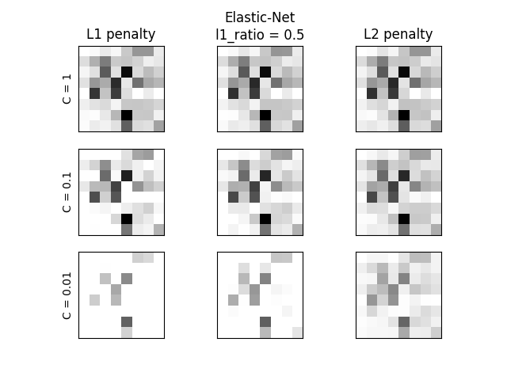

Note
Go to the end to download the full example code or to run this example in your browser via Binder
L1 Penalty and Sparsity in Logistic Regression¶
Comparison of the sparsity (percentage of zero coefficients) of solutions when L1, L2 and Elastic-Net penalty are used for different values of C. We can see that large values of C give more freedom to the model. Conversely, smaller values of C constrain the model more. In the L1 penalty case, this leads to sparser solutions. As expected, the Elastic-Net penalty sparsity is between that of L1 and L2.
We classify 8x8 images of digits into two classes: 0-4 against 5-9. The visualization shows coefficients of the models for varying C.
C=1.00
Sparsity with L1 penalty: 4.69%
Sparsity with Elastic-Net penalty: 4.69%
Sparsity with L2 penalty: 4.69%
Score with L1 penalty: 0.90
Score with Elastic-Net penalty: 0.90
Score with L2 penalty: 0.90
C=0.10
Sparsity with L1 penalty: 29.69%
Sparsity with Elastic-Net penalty: 14.06%
Sparsity with L2 penalty: 4.69%
Score with L1 penalty: 0.90
Score with Elastic-Net penalty: 0.90
Score with L2 penalty: 0.90
C=0.01
Sparsity with L1 penalty: 84.38%
Sparsity with Elastic-Net penalty: 68.75%
Sparsity with L2 penalty: 4.69%
Score with L1 penalty: 0.86
Score with Elastic-Net penalty: 0.88
Score with L2 penalty: 0.89
# Authors: Alexandre Gramfort <alexandre.gramfort@inria.fr>
# Mathieu Blondel <mathieu@mblondel.org>
# Andreas Mueller <amueller@ais.uni-bonn.de>
# License: BSD 3 clause
import matplotlib.pyplot as plt
import numpy as np
from sklearn import datasets
from sklearn.linear_model import LogisticRegression
from sklearn.preprocessing import StandardScaler
X, y = datasets.load_digits(return_X_y=True)
X = StandardScaler().fit_transform(X)
# classify small against large digits
y = (y > 4).astype(int)
l1_ratio = 0.5 # L1 weight in the Elastic-Net regularization
fig, axes = plt.subplots(3, 3)
# Set regularization parameter
for i, (C, axes_row) in enumerate(zip((1, 0.1, 0.01), axes)):
# Increase tolerance for short training time
clf_l1_LR = LogisticRegression(C=C, penalty="l1", tol=0.01, solver="saga")
clf_l2_LR = LogisticRegression(C=C, penalty="l2", tol=0.01, solver="saga")
clf_en_LR = LogisticRegression(
C=C, penalty="elasticnet", solver="saga", l1_ratio=l1_ratio, tol=0.01
)
clf_l1_LR.fit(X, y)
clf_l2_LR.fit(X, y)
clf_en_LR.fit(X, y)
coef_l1_LR = clf_l1_LR.coef_.ravel()
coef_l2_LR = clf_l2_LR.coef_.ravel()
coef_en_LR = clf_en_LR.coef_.ravel()
# coef_l1_LR contains zeros due to the
# L1 sparsity inducing norm
sparsity_l1_LR = np.mean(coef_l1_LR == 0) * 100
sparsity_l2_LR = np.mean(coef_l2_LR == 0) * 100
sparsity_en_LR = np.mean(coef_en_LR == 0) * 100
print("C=%.2f" % C)
print("{:<40} {:.2f}%".format("Sparsity with L1 penalty:", sparsity_l1_LR))
print("{:<40} {:.2f}%".format("Sparsity with Elastic-Net penalty:", sparsity_en_LR))
print("{:<40} {:.2f}%".format("Sparsity with L2 penalty:", sparsity_l2_LR))
print("{:<40} {:.2f}".format("Score with L1 penalty:", clf_l1_LR.score(X, y)))
print(
"{:<40} {:.2f}".format("Score with Elastic-Net penalty:", clf_en_LR.score(X, y))
)
print("{:<40} {:.2f}".format("Score with L2 penalty:", clf_l2_LR.score(X, y)))
if i == 0:
axes_row[0].set_title("L1 penalty")
axes_row[1].set_title("Elastic-Net\nl1_ratio = %s" % l1_ratio)
axes_row[2].set_title("L2 penalty")
for ax, coefs in zip(axes_row, [coef_l1_LR, coef_en_LR, coef_l2_LR]):
ax.imshow(
np.abs(coefs.reshape(8, 8)),
interpolation="nearest",
cmap="binary",
vmax=1,
vmin=0,
)
ax.set_xticks(())
ax.set_yticks(())
axes_row[0].set_ylabel("C = %s" % C)
plt.show()
Total running time of the script: (0 minutes 0.426 seconds)